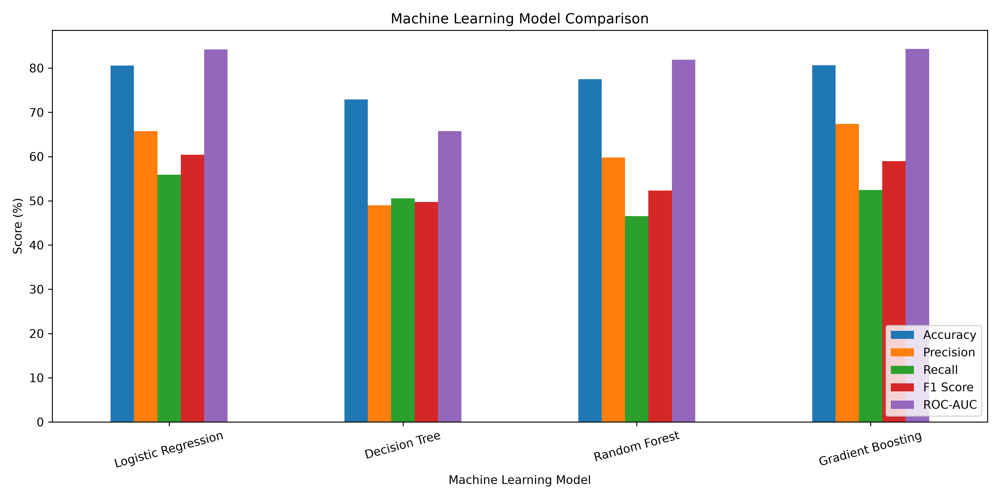
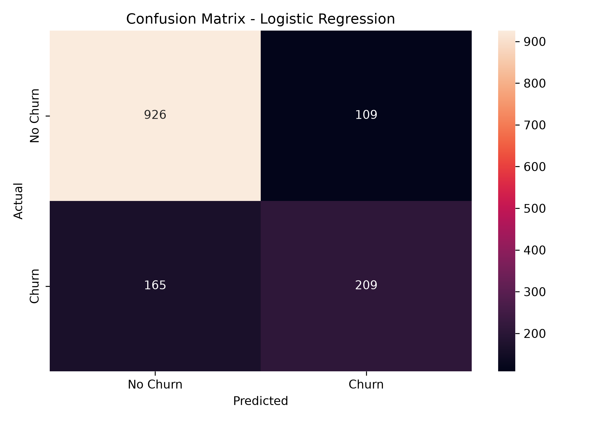
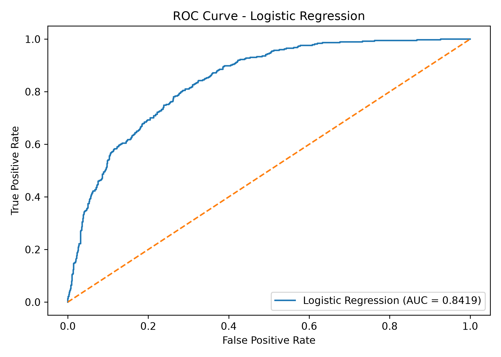
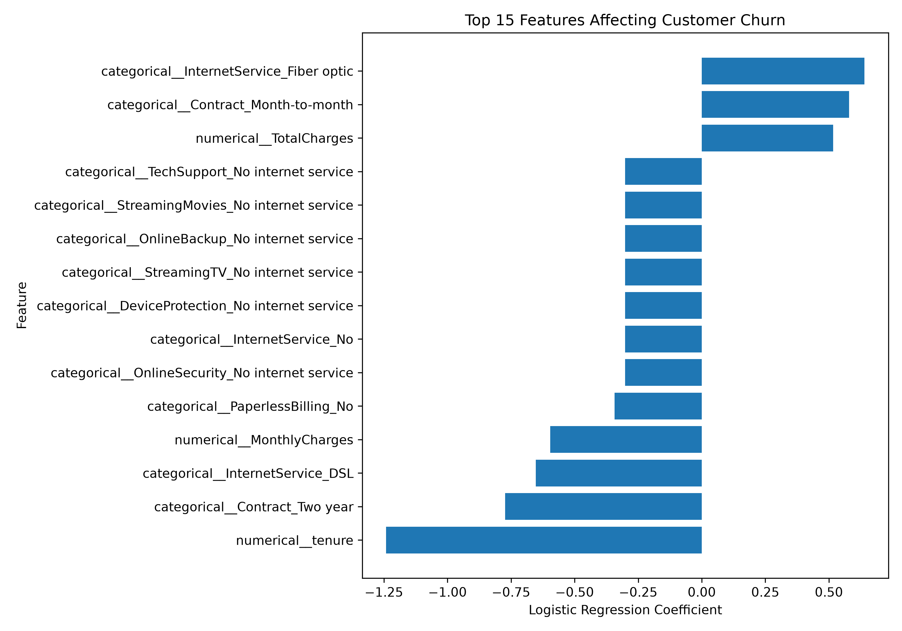

Model Performance
Machine Learning Model Evaluation
Evaluate the performance of the trained customer churn classification models.
--
Classification Accuracy
--
Prediction Precision
--
Churn Detection Recall
--
Balanced F1 Performance
🏆 Best Performing Model
Selected machine learning model used for customer churn prediction.
📊 Model Comparison
Comparison of the machine learning algorithms trained for churn prediction.

🔢 Confusion Matrix
Classification prediction results.

📈 ROC Curve
Model classification performance.

📌 Feature Importance
Features that contribute to customer churn prediction.

📚 Evaluation Metrics
Understanding the machine learning evaluation metrics.
Ready to Test the Model?
Enter customer information and generate an individual churn prediction.